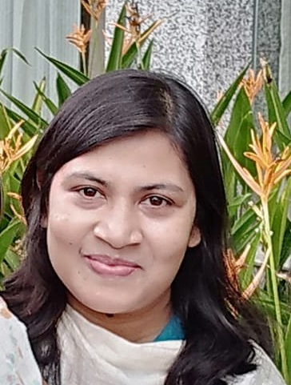
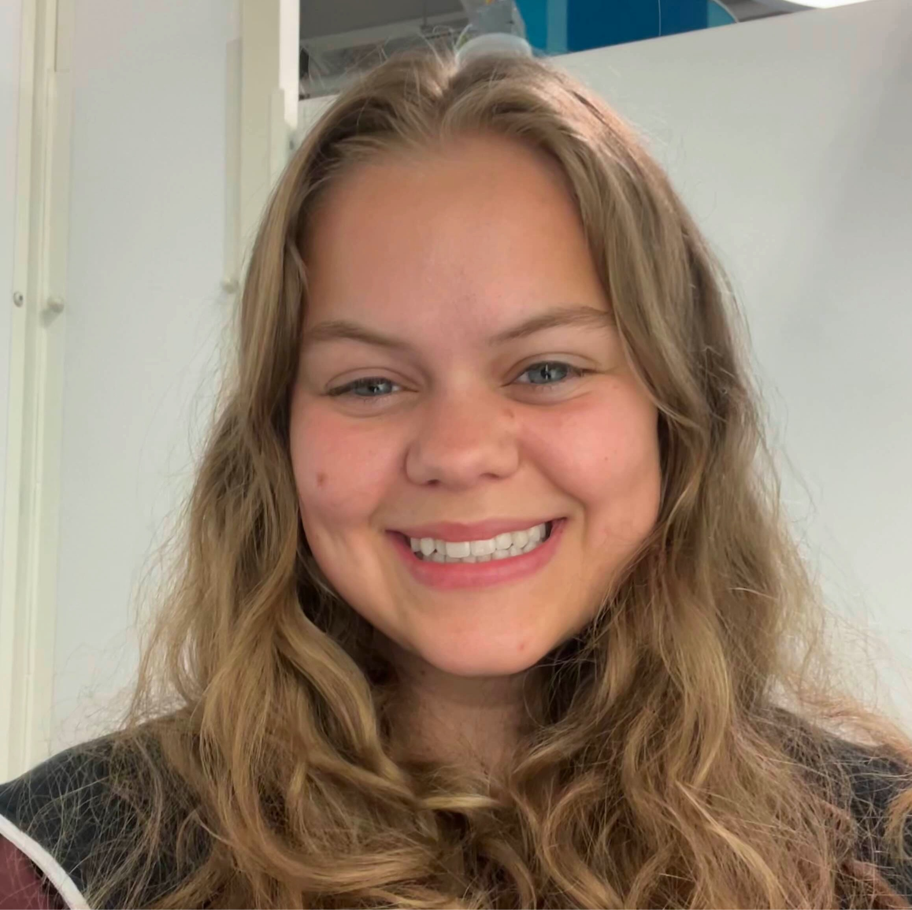
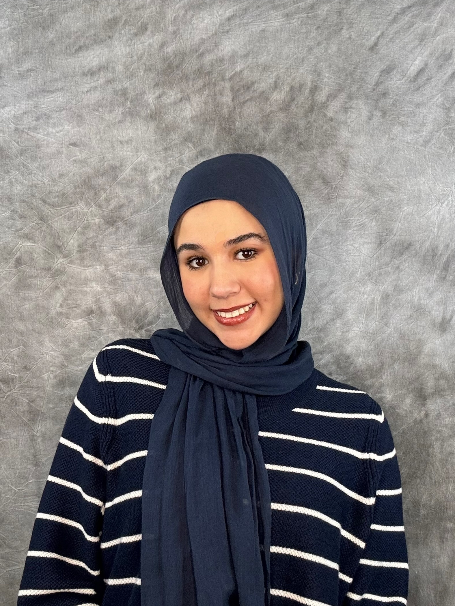
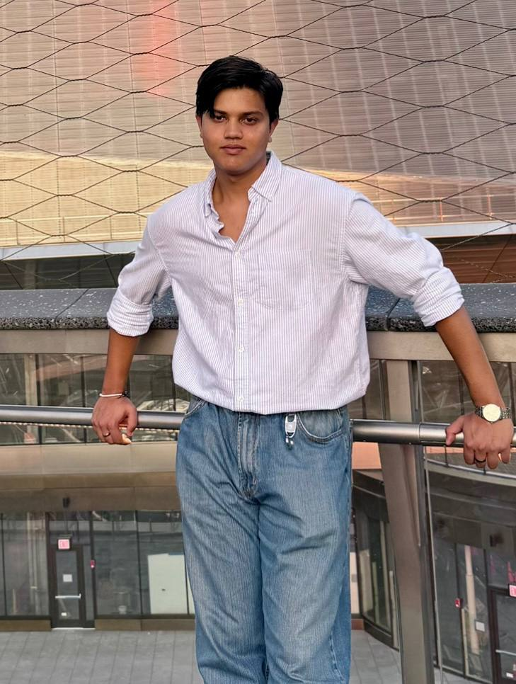

Director
Shreya Banerjee

|
I am an Artificial intelligence (AI) researcher, Assistant Professor of Computer Science at the University of New Orleans (UNO), USA, and Director of the (Human, Hybrid AI, and Machines (HAIM)) Lab at UNO. My research interest lies at the intersection of connectionist and logicist Al, with a focus on hybrid (reasoning and data-driven), knowledge-aware, & explainable AI techniques to solve complex problems in everyday life that challenge the boundaries of human and machine intelligence. My approach integrates formal logic, automated reasoning, machine learning, deep learning, and natural language processing tools and technologies. I earned my Ph.D. in Computer Science from Rensselaer Polytechnic Institute, where I was a graduate research assistant in the Rensselaer AI & Reasoning (RAIR) Lab. I worked, with my advisor Dr. Selmer Bringsjord, in several ONR and AFOSR sponsored projects using hybrid Artificial Intelligence based techniques. |
Ph.D. Students
Henry Ansah

|
I graduated from KNUST in 2017 with an undergraduate degree in Electrical Engineering. I am currently a PhD student at the University of New Orleans working under Professor Shreya Banerjee. My research interest lies in the intersection between Multimodal Machine Learning, Natural Language Processing, and Reasoning. My research goal is to explore all the various ways to enable commonsense reasoning in vision and language models, drawing insights from the cognitive nature that surrounds the reasoning capabilities of biological entities. |
Shahana Yasmin Chowdhury
|  | I graduated from KNUST in 2017 with an undergraduate degree in Electrical Engineering. I am currently a PhD student at the University of New Orleans working under Professor Shreya Banerjee. My research interest lies in the intersection between Multimodal Machine Learning, Natural Language Processing, and Reasoning. My research goal is to explore all the various ways to enable commonsense reasoning in vision and language models, drawing insights from the cognitive nature that surrounds the reasoning capabilities of biological entities. |
Visiting Scholars
Soheil Saneei
| My research interests involve exploring AI through the dual lenses of neuroscience and physics. More specifically, I am both interested in how AI agents can perceive and reason, and how machine/deep learning can be used to model physical phenomena. I believe the utilization of AI in these two fields can greatly deepen our understanding of how the material world and our perspective interact. I am also very interested in entrepreneurship, i.e. translating our scientific findings to make a real-world impact. |
Nhi Pham

|
I am an eager undergraduate student interested in utilizing multidisciplinary perspectives to explore the intersection of creativity and technology. Research allows me to broaden my knowledge in various fields while incorporating my passions in computer science, visual arts, design, and psychology. Currently, I am developing my skills in games, software, and web development. |
Jenny Spicer
|  | I am a first generation college undergraduate at UNO for Computer Science, with an ambitious goal to attend graduate school to study Human Computer Interaction. Short-term, my goals are to research UI/UX, game development, and/or data visualization. Medium-term, I want a career where I apply my findings. Long-term, my dream has always been to be STEM college professor or high school teacher, serving as a mentor sharing resources and opportunities I had to find alone, as well as inspiring students the same way my teachers and professors have inspired me along the way. |
Huda Hammad
|  | I'm an undergraduate Computer Science student at the University of New Orleans. I have a passion for exploring all aspects of technology. My interests range from Cybersecurity to AI. I enjoy problem-solving, researching, and finding ways to contribute to the field. Beyond academics, I’m always looking for opportunities to help others and make a positive impact. |
Pranish Ghimire
|  | I am an undergraduate Computer Science student at the University of New Orleans and a Research Assistant in the HAIM Lab. I enjoy exploring different tools and technologies to build projects, and I am particularly interested in research on AI/ML, as it allows me to engage with cutting-edge methods and approaches. I also enjoy participating in hackathons, where I get the chance to build creative projects in a short time. |